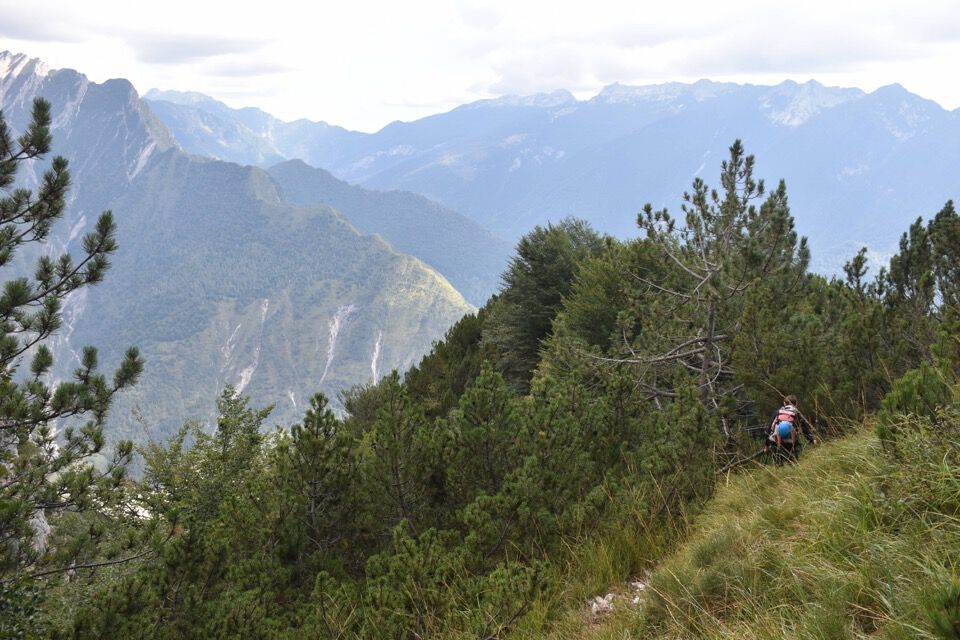
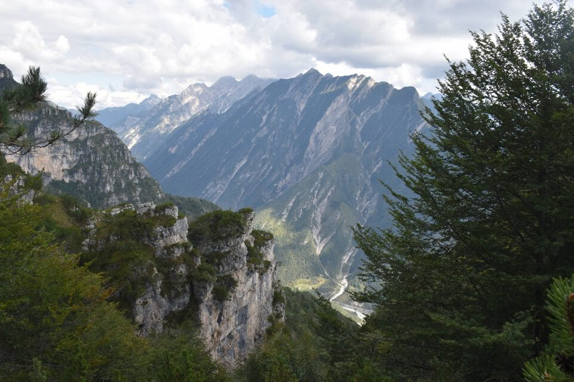

Traversata improvvisata dalla val Cimoliana alla val Settimana valicando forcella Vacialissa: e chi mai se lo sarebbe aspettato di salire pure il Col di Colle, messo in lista per un ipotetico futuro?
Certo, improvvisata ma non allo sbaraglio: ci vogliono dedizione e studio. Foto fatte a distanza e consultazione delle carte al 5000 sono elementi essenziali per compiere in tranquillità percorsi simili.
Partiamo da ponte Sandolèr in val Cimoliana: la vista si apre presto su Cima Mora e Dosso Nadei, con la val de Tarsìa.
Il passaggio sotto le pareti della Vacalizza è impressionante.
Laggiù forcella Vacialissa.
L'ex CAI 380, lato Cimoliana, è notoriamente in pessime condizioni: gli ultimi 50m prima della forcella consistono in solchi di dilavamento su ghiaia cementata. Guai a tenersi a dx, dove ci sono i vecchi bolli, dato che poi diventa impossibile e pericolosissimo traversare. Anche tenendosi tutto a sx il passaggio non è semplice, e in discesa la cosa non deve essere simpatica.
Arrivati in forcella a dir la verità i piani erano tutt'altro, ma una vocina interiore ci ha detto perentoriamente salite la torre e scendete a Claut. E la macchina? Un modo lo troverete.
Attacchiamo il canalone che divide in due la Torre.

Il I° grado della Berti in realtà è un II°+, ma c'è da aspettarselo...
Il panorama dalla Torre è eccezionale, soprattutto per chi come me ama vedere i paesi del fondovalle dalle cime.
Claut.
Verso Sud-Est digrada la complicata cresta, irta di torrioni mugosi, che termina con il Col di Colle e il monte Barbano.
Dalla cima della Torre merita scendere per cresta qualche metro verso Sud: un baratro impressionante sotto i piedi! Si ha dinnanzi tutto il labirinto della val Pisandola e delle Pale del Bressa. Luoghi "da sogni" delle Clautane, riesumati dal solito Luca Basso. Come dargli torto? Più misteriosa e sconosciuta è una cosa e maggiore è il desiderio, e questo è il mio spirito dell'andare per monti.

Laggiù la dirimpettaia Torre Sandolèr, con dietro gli Spalti di Toro.
Le nuvole per un attimo ci fanno vedere la Vacalizza (non si vede la cima, ma solo l'antecima q2185).
Si vede il tremendo percorso fatto per arrivare a forcella Vacialissa: siamo saliti per il ramo sx, stando più sulle rocce che sul solco.
Scendiamo dalla Torre e iniziamo a scendere nel versante clautano.
Arrivati a q1500 iniziamo a traversare verso Sud: cerca su e cerca giù ma non troviamo la benché minima traccia umana, come temevo. L'unico vago punto di riferimento, che peraltro nel bosco quasi mai si vede, sono le pareti sottostanti la q1575.0, sotto cui la CTRN 5000 posiziona la traccia. Speravo di trovare lì il sentiero, invece nulla; solo alla fine della parete si trova una traccia che rimane buona per un bel pezzo, fino alla forcella a Nord della q1495.8. Che sollievo!
Laggiù la forcella che ho appena citato.
Spunta il costone Sud di cima dei Viéres con le pareti che incombono sul ciol de Giaéda; sull'altro versante è "appoggiata" la Cengia dei Viéres propriamente detta. Che cengetta eh!
Bellissima la vista sulle Pale de Ciuone con relative cime: si vede bene il Ciol de Culisei tramite cui è salito di recente Ermanno, scendendo poi per le pale di Tolmen.
La traversata prosegue qui per buona traccia: ho tagliato molti mughi, ma solo in questo tratto.
 A monte del torrione q1495.8, da aggirare a Est per fitto pendio di mughi. Già in discesa ci ha fatto penare, figuriamoci percorrerlo in salita!
Quasi commovente camminare su tracce così ben marcate: credo sia ciò che resta dell'antico sentiero.
Le q1648.1 (sx) e q1575.0 (dx) viste dalla sella a monte del torrione q1495.8.
Abbandoniamo gli zaini in forcella e facciamo un salto sul Col di Colle: qui verso l'antecima Ovest e il M. Barbano (erboso a sx).

Bellissimo il panorama dal Col di Colle, anche se regge poco il confronto dopo che si è appena stati sulla Torre Vacialissa...
Ora la cima Vacialissa è sgombra dalle nubi.

Verso le Pale del Bressa. Eh!
Viéres: un sogno.
Ma mica è finita eh! Iniziamo a scendere per la val Sciarpenade, valle docile che è consigliabile percorrere solo in discesa. Non resta quasi nulla di un eventuale sentiero umano, e non c'è né un omino né un ramo piegato: solo in qualche tratto ci sono delle promettenti tracce continue.
I camosci hanno anche altre strade.
Ormai siamo a valle: in fondo in centro foto la Torre salita molte ore prima.
Peccato che la macchina sia a ponte Sandolèr... grazie a chi ci ha riportato al punto di partenza.
Per concludere ecco un'altra foto, questa scattata dal Pradut, dell'ex sentiero c.ra Vacialissa - Col di Colle: in arancio l'unico tratto con una vera traccia.
Qui una foto d'epoca di Claut (cartolina aquistabile su Internet): si vede benissimo che il Col di Colle era completamente prativo! Suppongo quindi che il sentiero c.ra Vacialissa - Col di Colle sia stato abbandonato prima che ci crescessero i mughi, motivo per cui non abbiamo trovato neppure un taglio.
Pietro Grava mi riferisce che malga Vacialissa, che era comunale (a differenza della Totuc), è stata attiva più o meno fino al periodo fra le due guerre.
Certo che è impressionante questa foto...